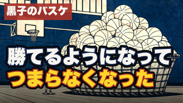

題字はshare_line由来「勝てるようになって／つまらなくなった」（タイトルの同文なぞりを回避＝fork指摘反映）。360px実寸↓

仕事は、回っています。数字も、悪くない。なのに、朝起きた瞬間に、もう疲れている。 うまくいっているのに、たのしくない。文句を言ったら罰が当たる気がして、黙っている。でも、あれは疲れの話ではありませんでした。 「黒子のバスケ」の帝光中学──全国三連覇の常勝チームで、成果が最大の場所からたのしさだけが死んでいった過程を、易経の「臨（りん）」で読み解きます。 ■〈名作×易経・全64話〉のコレクションの一話 ▼ チャプター 0:00 うまくいっているのに、たのしくない 0:14 疲れのせいだと思うことにしてきた 0:25 三千年前からの名前──最後に六本の線の図を見せます 0:42 帝光中学──全国三連覇、横断幕は百戦百勝 1:03 勝ちながら、たのしさのほうが先に死んでいく 1:20 処方は「もっと数字」──1人1試合20点のノルマ 1:39 数字で測られていなかった六人目が、見切りをつけた 1:58 誠凛──同じ才能が、出口だけを変えた 2:18 易経──変化のパターンを64個並べた本 2:35 臨──いい流れが来ている時の、関わり方の形 2:53 下の二本だけが明るい──春が近づく形 3:15 八月になれば、凶──敗北の予告日が書き込まれている 3:34 「うまくいっている」は状態ではなく、期限つきの季節 3:52 臨をひっくり返すと、次の形・観になる 4:18 警告は一箇所だけ──三番目の線のゆるみ 4:38 帝光はこの線をそのまま生きている 5:00 悔いたなら、咎は消える──黒子のやり直し 5:20 六爻図──約束した一枚 5:39 私も数字を足してきた──資格、副業、転職サイト 6:00 いちばんやらないのは、口に出すこと 6:24 出口──六本の線を、関わり方の階段として読む 6:43 下の二本──流れが来た時こそ、筋を持って踏み込む 7:04 三本目──認める、が処方 7:23 四本目──呼ばれる前に、こちらから席を立つ 7:43 五本目──選んだら、口を出さない 8:05 上──教えることに、際限がない 8:22 やめること──手帳に一行だけ書く 8:46 始めること──回っている仕事の自動運転を一件切る 9:09 つまらなくなった場所は、いちばんうまくやれるようになった場所 9:24 臨の次には、観が置かれている ▼ このチャンネルについて アニメ・漫画は、現代の寓話。 誰もが結末を知っている物語を、易経──3000年にわたって人間の変化を記録してきた古典──の64のパターンで読み解き、人生の教訓を持ち帰るシリーズです。全64話。 ▼ 今回のパターン 臨（りん）／地沢臨（ちたくりん）：64卦の19番目。上が坤（地）、下が兌（沢）。六本の線のうち、下の二本だけが強い線（陽）で、地面の下からあたたかい力が伸びてくる──春が近づく形です。いい流れが来ている時に、人がどう関わるかを記録した卦です。 卦辞は「大いに通る。貞しきに利あり。八月に至れば凶」。いちばんいい流れの形に、敗北の予告日が最初から書き込まれています。注釈は「春は永遠には続かない。変化が形になる前に、芽のうちに向き合えば制することができる」と続けます。 六本の線のうち、警告が書かれているのは下から三番目の一箇所だけです。「うまくいっている時、人は地位に安心して、関わりが甘くなる。得るものは何もない。ただし、そのことを悔いたなら、咎めは消える」。 象辞は「沢の上に地がある。君子は教えることに際限がなく、民を受け入れ守ることに限りがない」。 ※動画内の「六本の線を関わり方の深さの階段として読む」は語り手の読みで、原典の直訳ではありません。爻の言葉と、語り手が考えた実践は、動画内でも分けて述べています。 ▼ 参照作品 『黒子のバスケ』（原作：藤巻忠俊／集英社「週刊少年ジャンプ」連載） ※作品の批評・研究を目的として、必要最小限の範囲で作品名・登場人物名・作中の出来事（帝光中学の得点ノルマ、誠凛高校のウィンターカップ優勝を含む）に言及しています。映像・画像の引用は行っていません。作中事実は Wikipedia で確認しています。 ▼ AI利用の開示 ナレーションは Irodori-TTS（v4-Small）による音声合成です。挿絵は生成AIによる木版浮世絵風のイラストで、既存作品のキャラクター意匠は描いていません（人物は顔を描かないシルエットです）。六爻図はデータベースから機械的に描画したものです。構成・脚本は人間が監修しています。 ▼ 免責 本動画は易経という古典を用いた読み物・考察であり、占い・予言・医療や法律の助言ではありません。作品の解釈は一つではなく、ここで示すのは数ある読み方のうちの一つです。 #易経 #アニメ考察 #黒子のバスケ #臨 #漫画考察 #人生哲学
publish_kit: content/075/publish_kit.md ／ 動画: releases/075/ep55_kuroko_rin.mp4（通し視聴承認済み）